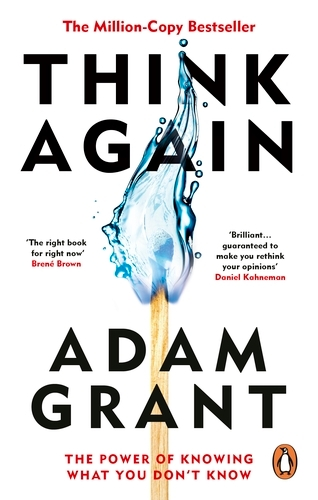

Library › Psychology & People
Think Again — Summary & Key Lessons

The power of knowing what you don't know — why rethinking beats intelligence, and confident humility beats conviction.
📖 OPEN THE FULL INTERACTIVE BREAKDOWN →🌐 Read it in Hindi, Hinglish, Gujarati, Tamil & 22 more languages — free, with audio.
💡 The Big Idea
We prize thinking and knowing — but in a fast-changing world, the meta-skill is RETHINKING: questioning your own beliefs as eagerly as you'd question others'. Grant's diagnosis: under pressure we default to three identities — preacher (defending sacred beliefs), prosecutor (attacking others' reasoning), politician (campaigning for approval) — when the winning mode is SCIENTIST: hypotheses not identities, experiments not arguments, and being wrong as discovery rather than defeat. The book scales the skill: individual rethinking (confident humility, the joy of being wrong), interpersonal (winning debates by listening, motivational interviewing — asking, not telling), and collective (teaching kids to update, building learning cultures where 'best practices' don't calcify). Identity should attach to VALUES, not opinions — so changing your mind feels like integrity, not betrayal.
🧠 The 6 Key Lessons
Lesson 1: Preacher, Prosecutor, Politician — or Scientist
Chapter 1: A Preacher, a Prosecutor, a Politician, and a Scientist Walk into Your Mind
Grant's typology of thinking-under-threat: PREACHER mode activates when sacred beliefs are challenged (we deliver sermons defending them), PROSECUTOR mode when we spot others' errors (we marshal arguments to convict), POLITICIAN mode when we're seeking approval (we campaign, lobbying instead of learning). All three share a flaw: being right becomes the goal, so being wrong becomes unthinkable. The SCIENTIST alternative: treat opinions as hypotheses, disagreements as experiments, and changed minds as progress. Crucially, this isn't profession but posture — actual scientists preach and prosecute constantly; the mode is a discipline anyone can choose. The payoff is empirical: entrepreneurs TAUGHT to think like scientists (test assumptions, pivot on evidence) massively outperformed controls — not from more intelligence, but from cheaper, faster error-correction.
📖 Example: The Italian startup study is Grant's anchor: over a hundred founders split into two boot camps — identical business content, but one group was taught scientific thinking (frame strategies as hypotheses, run experiments, decide on results). A year later the… Read the full example →
⚡ Do this: For one week, tag your conversations in real time: P (preaching), P (prosecuting), P (politicking), or S (scientist). When you catch a P, ask the scientist's question aloud: 'What evidence would change my mind?' If nothing could — that's not a belief, it's a religion; flag it for rethinking.
Lesson 2: Confident Humility: The Sweet Spot
Chapters 2–3: The Armchair Quarterback and the Impostor / The Joy of Being Wrong
Two failure modes bracket good judgment: armchair-quarterback syndrome (confidence exceeding competence — Dunning-Kruger's peak, 'Mount Stupid,' where knowing a little feels like knowing a lot) and impostor syndrome (competence exceeding confidence). Grant's target is CONFIDENT HUMILITY: faith in your capability to LEARN paired with doubt about your current KNOWLEDGE — believing in yourself while questioning your tools. This unlocks the book's most counterintuitive gift: the JOY of being wrong. Detach ideas from identity (your beliefs are possessions, not body parts) and discovering an error becomes finding money in an old coat — 'anytime I'm wrong, that means I've learned something.' The practical markers: separate confidence in the destination from confidence in the route; keep a 'challenge network' of trusted critics (distinct from your support network); and treat conviction's warmth as a warning light, not a green light.
📖 Example: Grant's forecaster exhibits: the best political forecasters in tournaments weren't the smartest or best-informed — they were the most frequent UPDATERS, revising predictions in small increments as evidence arrived, treating each revision as progress rather… Read the full example →
⚡ Do this: Build your challenge network: name two people who'll tell you you're wrong and formally invite them ('I need you to argue against my next three big decisions'). Then practice the update log: keep a note of beliefs you've revised this year — if the list is empty, you're not thinking, you're defending.
Lesson 3: Win Debates by Listening: The Art of Persuasive Rethinking
Chapters 5–7: Dances with Foes / Diamond Conflicts / Vaccine Whisperers
Persuasion's paradox: piling up arguments backfires — each weak reason gives the other side something to dismiss (expert negotiators use FEWER, stronger arguments and spend far more time asking questions and affirming common ground). Grant's toolkit: approach disagreement as a DANCE, not a war (find steps in common before leading); distinguish task conflict (productive — about ideas) from relationship conflict (corrosive — about people) and keep debates in the first lane; and for entrenched positions, borrow MOTIVATIONAL INTERVIEWING from addiction medicine: instead of telling people why they're wrong, ask open questions, listen reflectively, and let them articulate their OWN reasons for change — people don't resist change; they resist being changed. The complexity move completes it: presenting issues as two-sided flattens thinking into camps; showing the full messy range ('it's complicated') invites rethinking on all sides.
📖 Example: The vaccine whisperer case: in Quebec, physician Arnaud Gagneur's team used motivational interviewing with vaccine-hesitant mothers — no lectures, no data bombardment; just open questions about their concerns and reflective listening. Result: a significant… Read the full example →
⚡ Do this: In your next disagreement: lead with one genuine agreement, ask two open questions before offering one argument (your single strongest — resist stacking), and reflect their position back until they say 'exactly.' Watch what softens.
Lesson 4: Rethink Identity: Values Over Opinions, Careers Over Plans
Chapters 8–11: Rewriting the Textbook / Escaping Tunnel Vision
The deepest rethinking targets identity itself. Grant's principle: anchor who you are to VALUES (curiosity, fairness, growth) rather than OPINIONS or GROUPS — because values survive updating while opinions shouldn't have to; the person whose identity is 'I seek truth' can change positions with integrity, while 'I am a [party/position/plan]' converts every update into self-betrayal. Applied to careers: beware IDENTITY FORECLOSURE — settling too early on 'what I want to be' (the childhood question Grant wants retired) and then escalating commitment to a self chosen by a teenager; schedule life CHECKUPS instead (twice-yearly reviews: am I here from choice or momentum?). Applied to organizations: build learning cultures with psychological safety (rethinking is punished in cultures where admitting error is career damage) and process accountability — judge decisions by how they were made, not just how they turned out. And applied to happiness: it's usually found looking sideways (meaning, mastery, relationships), not chased head-on.
📖 Example: The Ridgeview... rather, Grant's escalation exhibits: the smokejumpers who died refusing to drop their heavy tools while outrunning a fire — identity ('firefighters carry tools') overriding survival — and their commander Wagner Dodge, who survived by… Read the full example →
⚡ Do this: Rewrite your identity sentence from opinions to values: 'I am someone who values ___' (three entries). Schedule two annual career checkups in your calendar right now — the questions: would I choose this again today, and what would I explore if I weren't already invested? And in your team, praise one well-made decision this month regardless of its outcome.
Lesson 5: The Joy of Being Wrong: Surprise Is the Engine of Learning
Part 2: Interpersonal Rethinking
Grant's most counterintuitive idea: being wrong should feel like being right, because discovering you were wrong is a precious gift — it means you just got smarter. Most people experience being wrong as an identity attack, so they defend old beliefs to protect their ego. Scientists, by contrast, are trained to celebrate disconfirmation; when their hypothesis dies, science advances. The practical move: actively seek information that could prove you wrong, and when you find it, thank the source. The joy of being wrong turns rethinking from a threat into a hobby — and that hobby compounds into dramatically better decisions.
📖 Example: Grant cites studies where the best forecasters constantly update their predictions when new evidence arrives — and enjoy it. The worst forecasters cling to old numbers, because changing would mean admitting error. Surprise is the feeling of learning; avoid… Read the full example →
⚡ Do this: Pick one strongly held opinion. This week, actively search for the strongest argument AGAINST it — and write down what you learned, even if you keep the opinion.
Lesson 6: Motivational Interviewing: How to Rethink Other People
Part 3: Rethinking Other People
You cannot argue someone into changing their mind — the harder you push, the more they defend. Grant's alternative is motivational interviewing: ask questions that make the other person articulate their own reasons for change. Three moves: ask 'what would it take for you to change your mind?' (this softens their certainty), ask 'how confident are you, on a scale from 1 to 10?' and then follow up with 'what would it take to get you from a 4 to a 5?' — the gap between numbers, not your argument, does the persuading. You are not selling your view; you are helping them discover their own doubts.
📖 Example: Grant describes how doctors use this technique with patients who resist treatment: instead of lecturing, they ask the patient to rate their readiness and then explore the small step that would raise the number. The patient's own words, not the doctor's,… Read the full example →
⚡ Do this: The next time someone disagrees with you, resist every urge to argue. Ask only: 'What would it take to change your mind?' Then listen — fully, without preparing your reply.
✅ 5-Step Action Plan
- Tag your thinking modes for a week; scientist mode on demand.
- Recruit a two-person challenge network; keep the update log.
- Debate with fewer arguments, more questions, real listening.
- Anchor identity to three values; calendar the twice-yearly checkup.
- Reward process over outcomes — in your team and yourself.
⚠️ When This Doesn't Work
Grant's 'rethink, don't cling to your identity' is exactly the advice Yahoo ignored for twenty years — they had every chance to rethink search, social and mobile, and each refusal to update their self-image let a rival eat the next decade. But rethinking has its own trap: constant rethinking without commitment becomes flailing. Some decisions need conviction held long enough to compound. The skill is knowing which beliefs deserve rethinking and which deserve defending — the book underweights how hard that discrimination is.
💀 The Graveyard Proves It
🔍 Yahoo — Declined Google Twice, Declined Everything. Burn: Trillions in missed value. Read the full case study →
💬 Best Quotes from Think Again
- “If knowledge is power, knowing what we don't know is wisdom.”
- “The purpose of learning isn't to affirm our beliefs; it's to evolve our beliefs.”
- “Who you are should be a question of what you value, not what you believe.”
Interactive version: mark lessons as read, listen in your language, share quote cards.